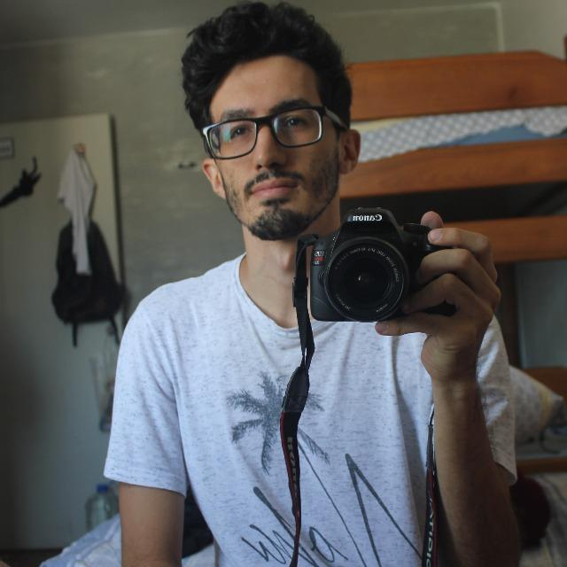

sou Daniel Dantas
Chef de Cozinha Profissional & Programador



Hey, sou Daniel e já joguei semi-profissionalmente como, jogador de League of Legends pelo time da Wolfs E-Sports, na posição de atirador comecei a jogar LOL aos 19 anos e meu elo mais alto alcançado foi o Mestre durante as pré-temporadas.
Entre meus amigos sou conhecido por ser extremamente calmo durante os jogos e conseguir guiar o time para a vitoria com boas estrategias.
Possuo um nivel de adaptação para o draft altissimo, com uma champion pool grande e bastante versatil, podendo jogar desde atiradores classicos, até de magos tanto de burst, control mages e até supports mages.
Experiência
- 2016 até 2018: Apenas partidas ranquedas, primeiramente chegando ao Platina nas Ranqueadas
- 2019 até 2020: Primeira tentativa de participar do time de League of Legends do Instituto Federal de São Paulo, ficando como segunda opção na minha posição.
- 2021 até 2022: Principal jogador do time jogando de atirador e flexivel nos times de base da atletica, head coach, capitão do time, campeão do torneio Forja do Platina.
Portfólio
Contato
- +55 12 991 000 999
- +55 12 991 000 999
- dani@wolfesports.com.br
- https://danidanis.com.br